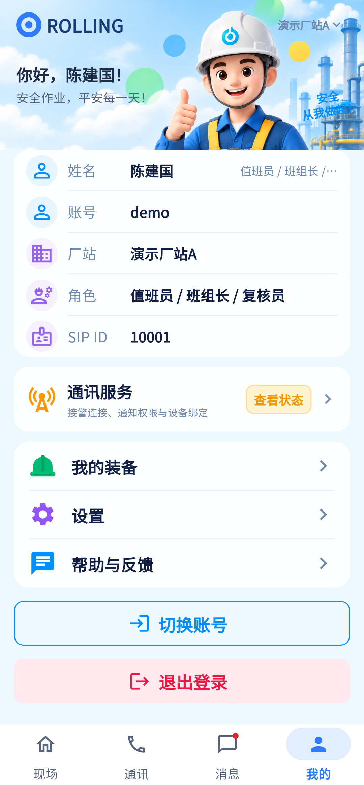

主要入口齐全，先对齐身份卡与字段；SIP展示按设计掩码规则处理。
相同 · 已有基础
账号姓名、厂站、角色、SIP、通讯服务、装备、设置、帮助、切换退出和四栏已有。
不同 · UI与场景
当前头部问候语，档案表格无设计头像/已登录标志；未显示人员编号；SIP直接明文。
01 / 先看 UI
两图显示宽度统一；设计390px与当前360逻辑宽的画布不同。各图可独立滚动到底，点击“原图”放大。


使用既有组件截图；业务数据为示例。
02 / 逐项核对功能与小交互
入口：底部导航 → 我的 · 当前形态：主页面
| 编号 | 部位 | 设计要求 | 当前UI | 功能结论 | 下一步 |
|---|---|---|---|---|---|
| 30-01 | 头图 | 我的标题与宣传语 | 当前“你好，姓名”问候，头图较矮 | 已有展示，UI不同 | 保留用户近期问候风格，小调层级 |
| 30-02 | 身份 | 头像、角色、已登录标签 | 当前姓名/角色表格，无独立头像徽标 | 部分：身份信息已有 | 对齐人物摘要，长角色不挤压 |
| 30-03 | 账号厂站 | 账号与当前站 | 已有 | 已有代码：session.me/siteName | 保留切站后即时更新 |
| 30-04 | 人员编号 | P-001 | 当前未显示该字段 | 缺失：登录账号和Person的身份关联呈现 | 补关联人员编号/未关联态，不能把userId当personCode |
| 30-05 | SIP ID | 10**01 | 当前textOf(sipId)直接显示 | UI/展示规则差异：未脱敏 | 按设计掩码；需要查看全值另有明确入口才开放 |
| 30-06 | 通讯服务 | 查看状态 | 已有服务卡和入口 | 已有代码：打开通知状态子页 | 保留当前真实状态，不固定正常 |
| 30-07 | 我的装备 | 查看当前领用 | 已有 | 已有代码：MyEquipmentPage | 保留空装备/示例区别 |
| 30-08 | 设置帮助 | 两个菜单入口 | 已有 | 已有代码：内部Navigator子页 | 按34/36整改，保留父子返回 |
| 30-09 | 切换退出 | 两个明确操作 | 已有分别文案与确认 | 已有代码：通话中禁用，确认后logout | 保留，不做多账号快捷切换假象 |
| 30-10 | 底部 | 我的选中与四栏 | 当前已有 | 已有代码 | 保持比例及安全区 |
源码依据
mine_page.dart:207,350,375,450,179
链接为随报告保存的带行号快照；行号对应分析时源码。以函数和字段共同定位，不能将请求代码视为执行成功证据。